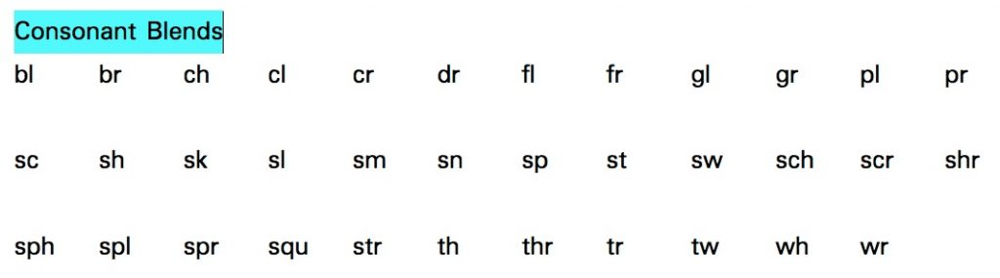

ဖလက်ရှ်ကတ်လေးတွေလုပ်ပါ
ပထမဆုံး လိုတာက ဖလက်ရှ်ကတ်တွေပါ။ ဆိုင်က ကတ်ထူစက္ကူပြားတွေ ဝယ်ပြီး ဖဲချပ်အရွယ်လေးတွေ ညှပ်လိုက်ပါ။ ပြီးရင် ရောင်စုံခဲတံနဲ့ အေကနေ ဇက်အထိ (A – Z) တစ်ကတ်ကို စာလုံးတစ်လုံး ချရေးပါ။ ကလေးတွေ စိတ်ဝင်စားအောင် အရောင်စုံ လေးတွေ ကာတွန်းပုံ လေးတွေ ဆွဲပေးနိုင်ရင် ပိုကောင်းပါတယ်။ အိမ်မှာ ပရင်တာရှိရင် အင်တာနက်ကနေ ဖလက်ရှ်ကတ်တွေ ဒေါင်းလုပ်လုပ်ပြီး ကတ်ထူပေါ်မှာ ပရင်လုပ်နိုင်ပါတယ်။ အကယ်လို့ ကိုယ့်ဟာကိုယ် ဖလက်ရှ်ကတ်လေးတွေ ဆွဲမယ်ဆိုရင် ကလေးနဲ့ အတူ ပံလေးတွေဆွဲ၊ အရောင်လေးတွေ ခြယ်ရင် ကလေးလဲ ပိုစိတ်ဝင်စားပါလိမ့်မယ်။ဖလက်ရှ်ကတ်တွေကို ရောလိုက်ပြီး အသံထွက်သင်ပေးပါ
ဖလက်ရှ်ကတ် လေးတွေကို တစ်ကတ်ချင်းစီ ထောင်ပြပြီး ကလေးကို သင်ပေးပါ။ စကားလုံး အမည်ရော အသံထွက်ရော သင်ပေးပါ။ ဥပမာ B ကို ပြပြီး B – ba လို့ ပြောပြီး သင်ပေးပါ။ သင့်ကလေးကို လိုက်ရွတ်ခိုင်းပါ။ နောက်အခါတွေကျရင် ကလေးကိုဘာလဲ မေးပြီး သူမမှတ်မိရင်၊ မမှန်ရင် ပြန်ပြင်ပေးပါ။ တစ်နေ့ကို စကားလုံး ၄-၅ လုံးလောက်နဲ့ နည်းနည်းစီ သင်ပေးသွားပါ။ အသံထွက်တွေ သေသေချာချာ သိချင်ရင် အောက်က ဗီဒီယိုထဲမှာ လေ့လာကြည့်ပါ။Phonic Sounds from turtlediary on Vimeo.
နှစ်လုံးတွဲ အသံထွက်တွေ သင်ပေးပါ
စကားလုံး ၂၆ လုံးကို အသံထွက် နှင့်တကွ သင့်ကလေး ပိုင်ပိုင်နိုင်နိုင် မှတ်မိသွားပြီဆိုရင် နောက်တဆင့်က လွယ်ကူတဲ့ နှစ်လုံးတွဲ စကားလုံးတွေ သင်ပေးပါ။ ဥပမာ၊ sh – ရှ၊ ch – ချ၊ th – သ၊ wh – ဝှ ဆိုတာမျိုးတွေပါ။ ဒီအဆင့်မှာ ဗျည်း (consonants) နှစ်လုံးတွဲတွေပဲ အရင်စသင်ပေးပါ။ consonant blends တွေလို့လဲ ခေါ်ပါတယ်။ သရ (vowels – a, e, I, o, u) တွဲတွေက နောက်အဆင့်တွေမှ သင်ပေးပါ။ သရတွဲတွေ ဆိုတာ ဥပမ၊ ie, ee, ae, ea အစရှိတာတွေပါ။ အသုံးများတဲ့ consonant blends ဗျည်းတွဲတွေကို အောက်မှာ ဖော်ပြပေး ထားပါတယ်။
StockSnap | Pixabay
WikiHow